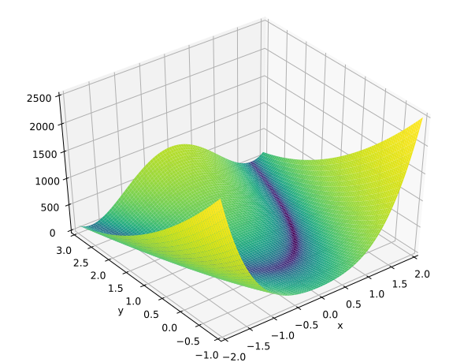

Background in basic optimization with R
References

Online courses
All slides stolen (extracted/re-arranged) from :
- Convex Optimization: http://www.seas.ucla.edu/~vandenbe/ee236b/ee236b.html
- Optimization Methods for Large-Scale Systems http://www.seas.ucla.edu/~vandenbe/ee236c/ee236c.html
Convex unconstrained problems
An example
Rosenbrock Banana function
\[ f(x) = 100( x_2 - x_2^2) + (1-x_1)^2 \]
\[ \nabla f (x) = \begin{pmatrix} -400 x_1 (x_2 - x_1^2) - 2 (1-x_1) \\ 200 (x_2 - x_1^2) \end{pmatrix} \]

Rosenbrock Banana function in R
objective
objective <- function(x) {
return( 100 * (x[2] - x[1] * x[1])^2 + (1 - x[1])^2 )
}gradient
gradient <- function(x) {
return( c( -400 * x[1] * (x[2] - x[1] * x[1]) - 2 * (1 - x[1]), 200 * (x[2] - x[1] * x[1]) ) )
}Use stats::optim
optim usage
Definition
optim(par, fn, gr = NULL, ...,
method = c("Nelder-Mead", "BFGS", "CG", "L-BFGS-B", "SANN",
"Brent"),
lower = -Inf, upper = Inf,
control = list(), hessian = FALSE)- Nelder-Mead: approximation of the gradient
- BFGS: quasi-Newton
- CG: conjuguate gradient
- L-BFGS-B: BFGS with limited memory, box constrained
- SANN: simulated annealing
Call to optim - BFGS
x0 <- c(-1.2, 1)
res_bfgs <- optim(x0, objective, gradient, method = "BFGS", control= list(trace = 2))## initial value 24.200000
## iter 10 value 1.367383
## iter 20 value 0.134560
## iter 30 value 0.001978
## iter 40 value 0.000000
## final value 0.000000
## convergedCall to optim - CG
x0 <- c(-1.2, 1)
res_cg <- optim(x0, objective, gradient, method = "CG", control= list(trace = 2))## Conjugate gradients function minimizer
## Method: Fletcher Reeves
## tolerance used in gradient test=3.63798e-12
## 0 1 24.200000
## parameters -1.20000 1.00000
## **** i< 1 7 4.132161
## parameters -1.02752 1.07040
## * i> 2 10 4.126910
## parameters -1.02855 1.06882
## **** i> 3 16 4.121409
## parameters -1.02924 1.06533
## i> 4 18 4.106523
## parameters -1.02586 1.05731
## **** i> 5 24 4.100955
## parameters -1.02261 1.05573
## i> 6 26 4.086136
## parameters -1.01839 1.04818
## **** i> 7 32 4.080524
## parameters -1.01914 1.04464
## i> 8 34 4.065787
## parameters -1.01579 1.03670
## **** i> 9 40 4.060127
## parameters -1.01250 1.03514
## i> 10 42 4.045415
## parameters -1.00824 1.02768
## **** i> 11 48 4.039717
## parameters -1.00900 1.02412
## i> 12 50 4.025073
## parameters -1.00568 1.01621
## **** i> 13 56 4.019328
## parameters -1.00236 1.01467
## i> 14 58 4.004703
## parameters -0.99804 1.00728
## **** i> 15 64 3.998920
## parameters -0.99880 1.00370
## i> 16 66 3.984360
## parameters -0.99552 0.99582
## **** i> 17 72 3.978528
## parameters -0.99217 0.99429
## i> 18 74 3.963986
## parameters -0.98779 0.98699
## **** i> 19 80 3.958118
## parameters -0.98855 0.98339
## i> 20 82 3.943639
## parameters -0.98530 0.97553
## **** i> 21 88 3.937719
## parameters -0.98192 0.97402
## i> 22 90 3.923256
## parameters -0.97749 0.96680
## **** i> 23 96 3.917299
## parameters -0.97824 0.96317
## i> 24 98 3.902898
## parameters -0.97502 0.95534
## **** i> 25 104 3.896888
## parameters -0.97161 0.95384
## i> 26 106 3.882502
## parameters -0.96712 0.94670
## **** i> 27 112 3.876454
## parameters -0.96787 0.94306
## i> 28 114 3.862128
## parameters -0.96469 0.93524
## **** i> 29 120 3.856025
## parameters -0.96125 0.93376
## i> 30 122 3.841712
## parameters -0.95669 0.92669
## **** i> 31 128 3.835572
## parameters -0.95743 0.92303
## i> 32 130 3.821316
## parameters -0.95429 0.91522
## **** i> 33 136 3.815119
## parameters -0.95082 0.91376
## i> 34 138 3.800875
## parameters -0.94618 0.90677
## **** i> 35 144 3.794641
## parameters -0.94692 0.90309
## i> 36 146 3.780452
## parameters -0.94382 0.89530
## **** i> 37 152 3.774158
## parameters -0.94032 0.89385
## i> 38 154 3.759979
## parameters -0.93561 0.88694
## **** i> 39 160 3.753649
## parameters -0.93635 0.88323
## i> 40 162 3.739522
## parameters -0.93327 0.87545
## **** i> 41 168 3.733129
## parameters -0.92975 0.87402
## i> 42 170 3.719010
## parameters -0.92496 0.86719
## **** i> 43 176 3.712582
## parameters -0.92569 0.86346
## i> 44 178 3.698513
## parameters -0.92265 0.85568
## **** i> 45 184 3.692020
## parameters -0.91909 0.85427
## i> 46 186 3.677956
## parameters -0.91422 0.84751
## **** i> 47 192 3.671429
## parameters -0.91495 0.84377
## i> 48 194 3.657411
## parameters -0.91194 0.83598
## **** i> 49 200 3.650816
## parameters -0.90836 0.83459
## i> 50 202 3.636803
## parameters -0.90340 0.82791
## **** i> 51 208 3.630174
## parameters -0.90412 0.82414
## i> 52 210 3.616203
## parameters -0.90115 0.81636
## **** i> 53 216 3.609503
## parameters -0.89754 0.81498
## i> 54 218 3.595534
## parameters -0.89249 0.80838
## **** i> 55 224 3.588802
## parameters -0.89320 0.80459
## i> 56 226 3.574871
## parameters -0.89026 0.79679
## **** i> 57 232 3.568067
## parameters -0.88662 0.79544
## i> 58 234 3.554135
## parameters -0.88148 0.78891
## **** i> 59 240 3.547298
## parameters -0.88217 0.78510
## i> 60 242 3.533401
## parameters -0.87927 0.77729
## **** i> 61 248 3.526489
## parameters -0.87561 0.77595
## i> 62 250 3.512588
## parameters -0.87036 0.76950
## **** i> 63 256 3.505645
## parameters -0.87105 0.76567
## i> 64 258 3.491774
## parameters -0.86818 0.75784
## **** i> 65 264 3.484754
## parameters -0.86448 0.75653
## i> 66 266 3.470875
## parameters -0.85914 0.75015
## **** i> 67 272 3.463826
## parameters -0.85981 0.74630
## i> 68 274 3.449973
## parameters -0.85697 0.73845
## **** i> 69 280 3.442843
## parameters -0.85325 0.73715
## i> 70 282 3.428978
## parameters -0.84779 0.73085
## **** i> 71 288 3.421820
## parameters -0.84844 0.72698
## i> 72 290 3.407976
## parameters -0.84564 0.71910
## **** i> 73 296 3.400736
## parameters -0.84189 0.71782
## i> 74 298 3.386876
## parameters -0.83632 0.71160
## **** i> 75 304 3.379609
## parameters -0.83696 0.70771
## i> 76 306 3.365764
## parameters -0.83418 0.69979
## **** i> 77 312 3.358412
## parameters -0.83041 0.69853
## i> 78 314 3.344546
## parameters -0.82472 0.69239
## **** i> 79 320 3.337170
## parameters -0.82533 0.68848
## i> 80 322 3.323313
## parameters -0.82258 0.68052
## **** i> 81 328 3.315850
## parameters -0.81879 0.67928
## i> 82 330 3.301967
## parameters -0.81297 0.67321
## **** i> 83 336 3.294481
## parameters -0.81356 0.66928
## i> 84 338 3.280600
## parameters -0.81084 0.66128
## **** i> 85 344 3.273027
## parameters -0.80703 0.66006
## i> 86 346 3.259113
## parameters -0.80108 0.65407
## **** i> 87 352 3.251518
## parameters -0.80164 0.65012
## i> 88 354 3.237599
## parameters -0.79894 0.64206
## **** i> 89 360 3.229915
## parameters -0.79510 0.64086
## i> 90 362 3.215957
## parameters -0.78902 0.63495
## **** i> 91 368 3.208254
## parameters -0.78955 0.63098
## i> 92 370 3.194282
## parameters -0.78687 0.62287
## **** i> 93 376 3.186489
## parameters -0.78302 0.62168
## i> 94 378 3.172470
## parameters -0.77678 0.61585
## **** i> 95 384 3.164660
## parameters -0.77729 0.61186
## i> 96 386 3.150619
## parameters -0.77463 0.60368
## **** i> 97 392 3.142719
## parameters -0.77075 0.60252
## i> 98 394 3.128622
## parameters -0.76437 0.59676
## **** i> 99 400 3.120708
## parameters -0.76484 0.59276
## i> 100 402 3.106579
## parameters -0.76218 0.58451Use external library via nloptr
nloptr usage
Definition
nloptr(x0, eval_f, eval_grad_f, ..., opts = list())- Many gradient free methods
- Most existing gradient-based methods
- global optimizer
Call to nloptr - BFGS
library(nloptr)
opts <- list("algorithm"="NLOPT_LD_LBFGS", "xtol_rel"=1.0e-8)
res <- nloptr(x0=x0, eval_f=objective, eval_grad_f=gradient, opts=opts)
print(res)##
## Call:
##
## nloptr(x0 = x0, eval_f = objective, eval_grad_f = gradient, opts = opts)
##
##
## Minimization using NLopt version 2.4.2
##
## NLopt solver status: 1 ( NLOPT_SUCCESS: Generic success return value. )
##
## Number of Iterations....: 56
## Termination conditions: xtol_rel: 1e-08
## Number of inequality constraints: 0
## Number of equality constraints: 0
## Optimal value of objective function: 7.35727226897802e-23
## Optimal value of controls: 1 1